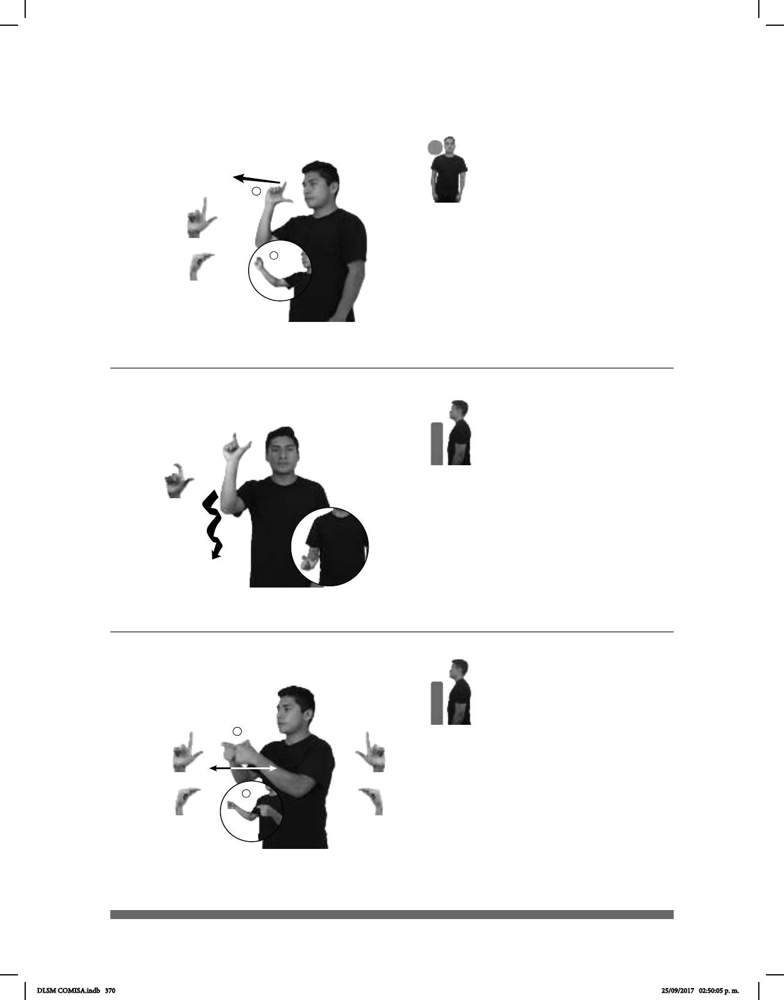

370
Seña: SM
Seña que pasa de
Palma hacia afuera.
A la altura del hombro.
Recto hacia el frente
mientras los dedos índice y pulgar
se tocan.
v. prnl. Alejarse del
lugar en el que estaba.
Seña: SM
L.10
Palma hacia afuera.
Del hombro al
abdomen.
La mano sigue una
trayectoria ondulada.
País ubicado en el sur
de Europa cuya capital es Roma.
Seña: SS
Seña que pasa de
Las palmas se
encuentran frente a frente.
A la altura del pecho,
los dedos se tocan.
Las manos parten de
un mismo punto y luego se abren
hacia los lados mientras el pulgar
toca los dedos de la mano.
País ubicado en el este
de Asia cuya capital es Tokio.
(L-89)
(L-88)
(L-90)
AYER pos-TUYO AMIGO-MUJER TEMPRANO IRSE
Ayer tu amiga se fue temprano.
dm-JOSÉ APRENDER IDIOMA ITALIA
JAPÓN ESE ISLA BONITO
Japón es una isla bonita.
DLSM COMISA.indb 370 25/09/2017 02:50:05 p. m.